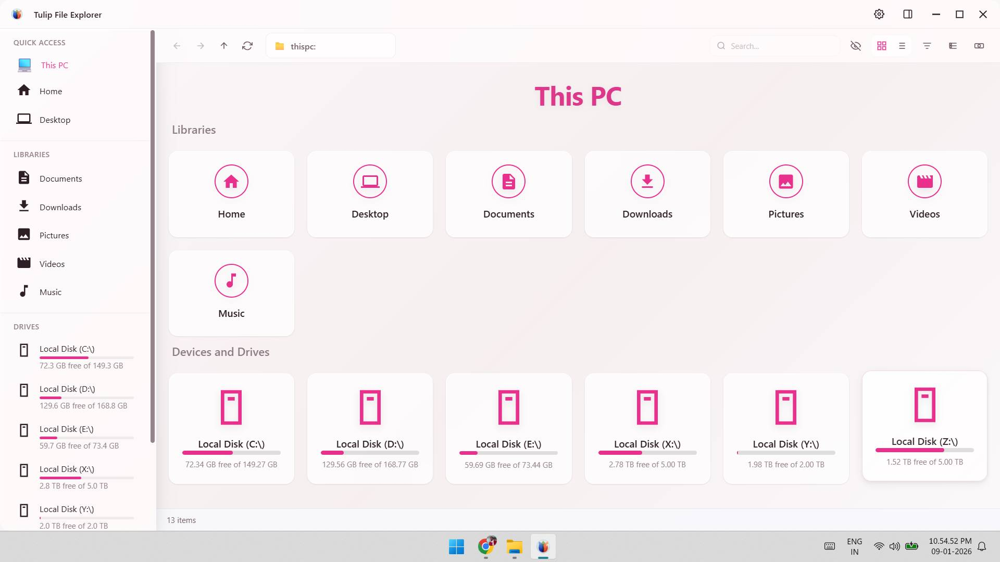
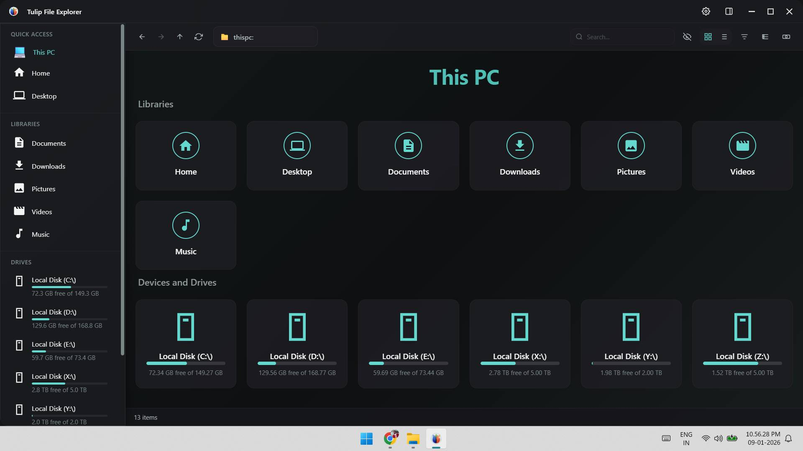
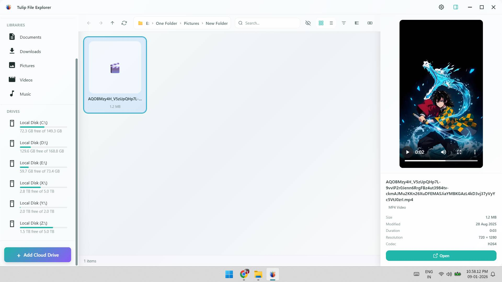
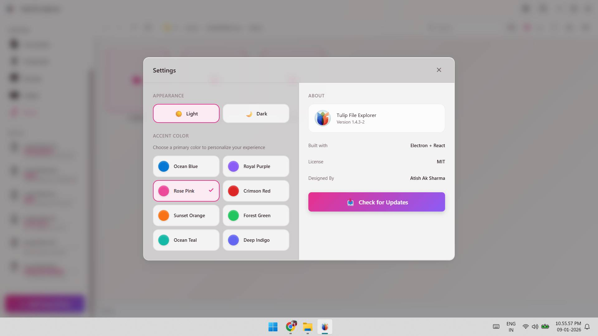
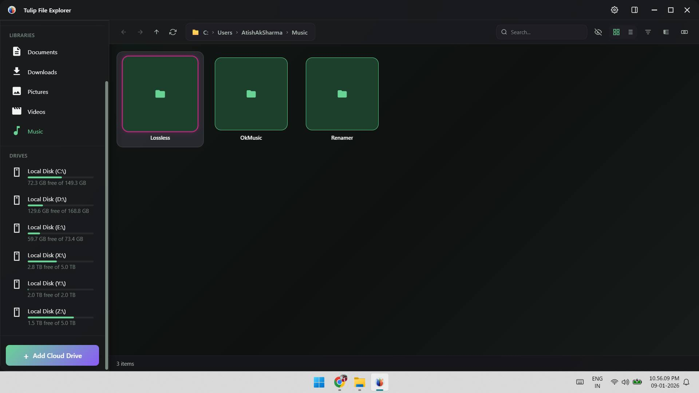

This PC, at a glance
Your libraries up top, every drive below with a bar that shows how full it is. One look tells you where the space went.
Tulip is a free, open-source file explorer for Windows, Linux and macOS. Clean light and dark themes, eight accent colours and a preview pane that plays your photos and videos in place.


Features
The things you reach for every day, laid out so you never hunt for them.
Your libraries up top, every drive below with a bar that shows how full it is. One look tells you where the space went.
Select a video or photo and it plays in the side pane, with size, date, length and codec.

Pick light or dark, then one of eight accent colours. Tulip remembers your choice.

A true dark theme, not an afterthought. Every view, panel and dialog follows it.

Jump back to any parent folder from the breadcrumb bar.
Filter the folder you are in, right from the toolbar.
Switch views and sorting, show or hide hidden files.
Add a cloud drive and browse it next to your local disks.
Screens
Real screenshots from Tulip 1.4.3-2 on Windows. Click one to look closer.
Download
Version 1.4.3-2. Free, no account, no tracking.
Looking for the source or older builds? All releases on GitHub.